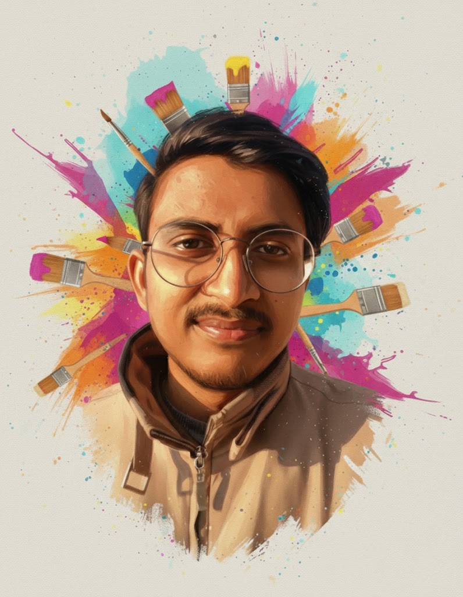

My Story
"My art is more than visual beauty, it is a philosophy and a silent language of imagination, emotion, thought, and existence. My work blends originality, imagination, concepts, comics, spirituality, and realism to create unique artworks without copying references. Every piece carries its own story, energy, and deeper meaning. Through my art, I create a connection between imagination and reality that inspires emotion, curiosity, and creativity."

My name is Ishaan, and I'm a conceptual artist from India. I am an Art Teacher and an Artist with more than 10 years of personal experience. I have taught many people, including Indian and international artists, professional artists, art graduates, and even some art teachers from degree colleges. I have also worked on books and digital art projects for shows. I have participated in many exhibitions, sold many paintings, and won 1st prize in two national art contests. After achieving all this, I started teaching art in a more systematic way.
I come from a science background, but somewhere along the way, I realized that the world I was being pushed toward wasn't the world I actually wanted to live in. So I made a choice. I left science, picked up a brush, and never looked back. That decision wasn't just about making art. It was about making sense of things.
Over the past 10+ years as an artist, I've come to believe that what the internet and social media show us about art, and about what it means to be an artist, is deeply misleading. We're surrounded by content that reduces art to technique, to aesthetics, to how many followers you have. And somewhere in all that noise, the actual soul of art gets lost. My work tries to find that soul again. It's not just about what something looks like. It's about what it means: the imagination behind it, the emotion that drives it, the concept it carries, the philosophical depth it holds, the message it leaves behind. That, to me, is what separates a picture from a piece of art. And that's what I try to teach.
Being self-taught isn't special on its own; honestly, 48 out of 50 artists are self-taught. The real question is: what did you teach yourself? If everyone learned the same thing on their own, what's the point? Copying references is an important part of learning, yes, but if that's where you stop, you haven't really begun.
To understand art more deeply, I started reading widely: philosophy, epistemology, literature, music, history, politics, sociology, psychology, and religious scriptures from different traditions. I also spent time learning languages: English, Hindi, Urdu, Arabic, Persian, and Sanskrit, not to be impressive, but because each language opens a different window into how human beings think and feel.
I'm also a musician. I've been playing tabla for over 16-17 years, with 20+ awards and certifications to my name. Music and art have always lived side by side in my life, both are languages that say things words can't.
On the art side, I've exhibited in Delhi and Allahabad, sold paintings, explained my work to some very influential people (including politicians and ministry officials), given several interviews, worked as a digital artist on a few series, won national art contests, and contributed to a book called Fourteen to Forty, published worldwide in 2020-21.
I don't consider myself a big scholar. I'm just someone who asked a lot of questions and kept searching for honest answers. And because I've been lucky enough to find many of those answers, I became a teacher. Not to show off what I know, but to share what I have, in the hope that every next learner will understand better than the previous one.
"The scholar who does not spread his knowledge is like a lamp that gives no light."@crossdale_arts
- Ibn Khaldun (Father of Sociology)